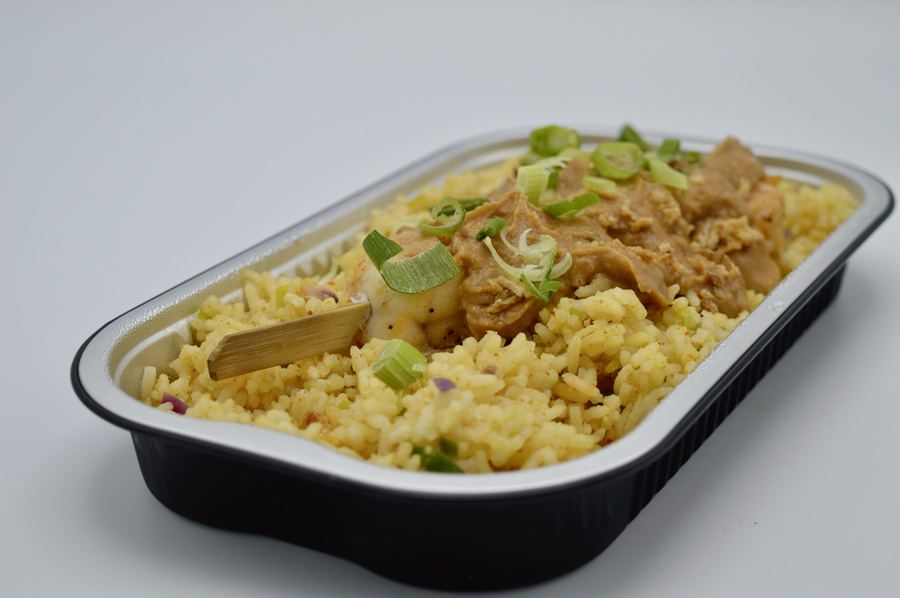
Nasi met zeeduivelsaté
Met eigen kruidenmengsel
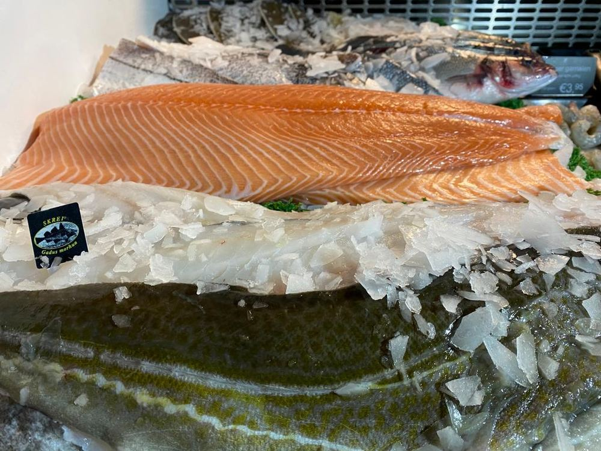
Vers, eigentijds en passend bij de seizoenen. Van verse vis en kibbeling tot maaltijden die we helemaal zelf maken.
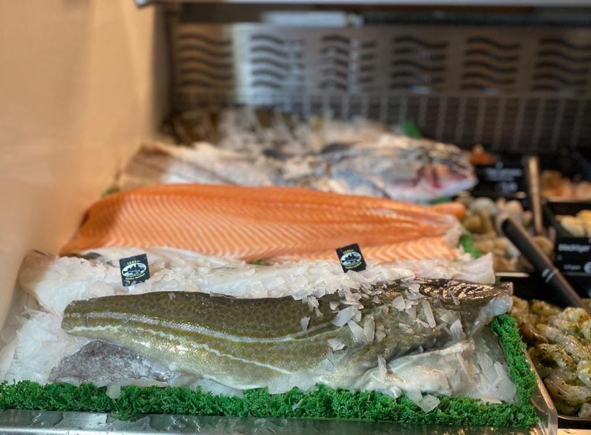
Alleen verse producten zijn goed genoeg. Speciaal voor u gevangen, soms in barre omstandigheden. Daarom gaan we er zorgvuldig mee om, van inkoop tot vitrine.
Geen idee hoe u het klaarmaakt? Vraag het gerust aan de kraam. We geven er graag een recept bij.
Onze bami, mihoen, nasi en paella maken we compleet zelf, met zelf samengestelde kruiden. Ze zijn niet wekenlang houdbaar, maar wel lekker vers en puur.

Met eigen kruidenmengsel
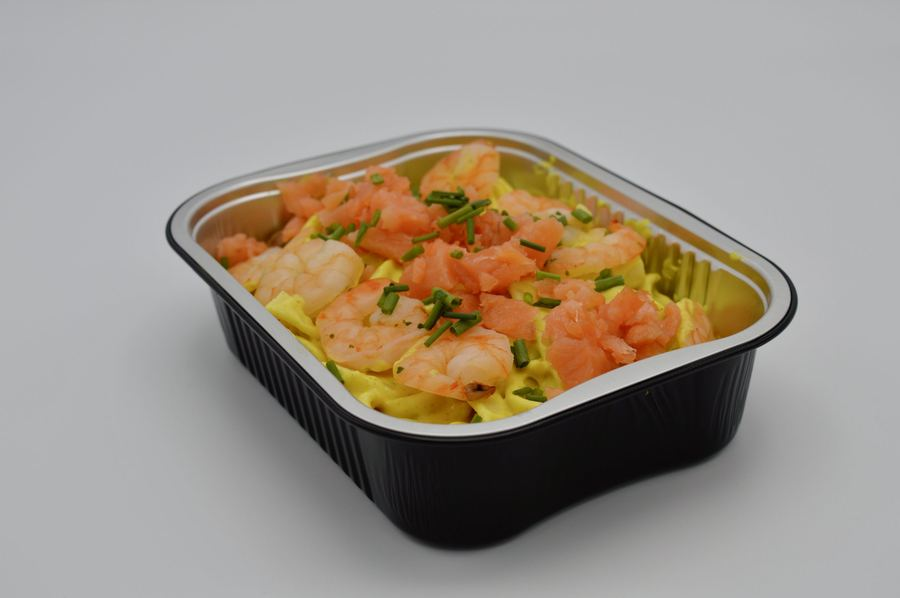
Met verse pasta
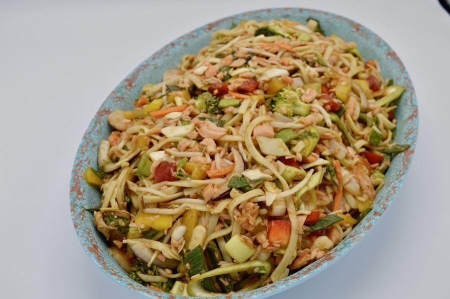
Met verse mie
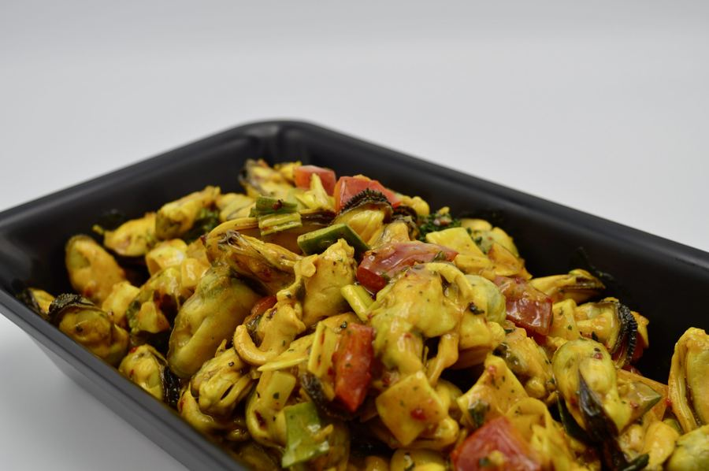
Zelfgemaakt
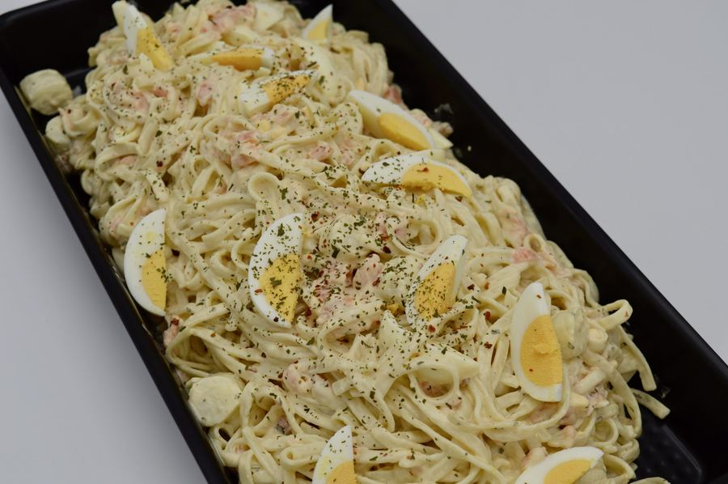
Met verse pasta
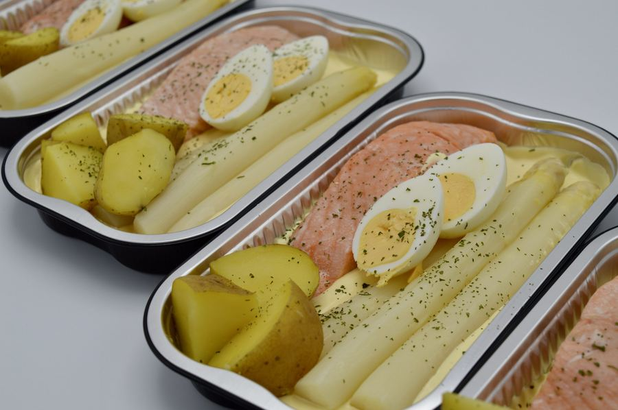
Zelfgemaakt
Onze gestoomde zalm is een meesterwerk van Richard: lang gezocht, veel methodes geprobeerd en nu smelt hij op de tong. En de zalmrollade? Een echte aanrader.
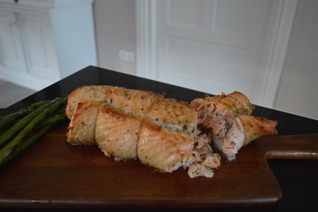
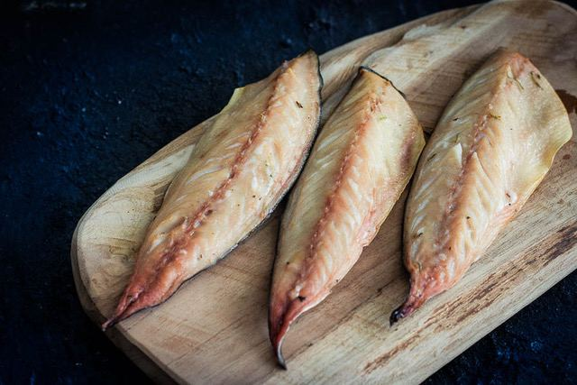
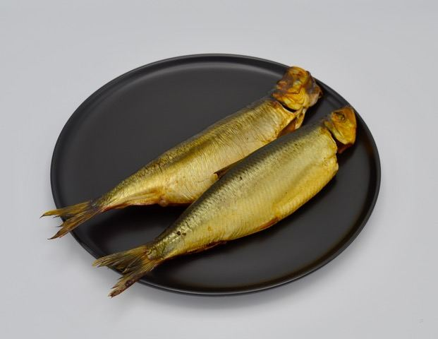
Stuur ons een WhatsApp of bel even. Zeg erbij op welke markt u langskomt.
Ook als u een vraag heeft over hoe u uw vis klaarmaakt.